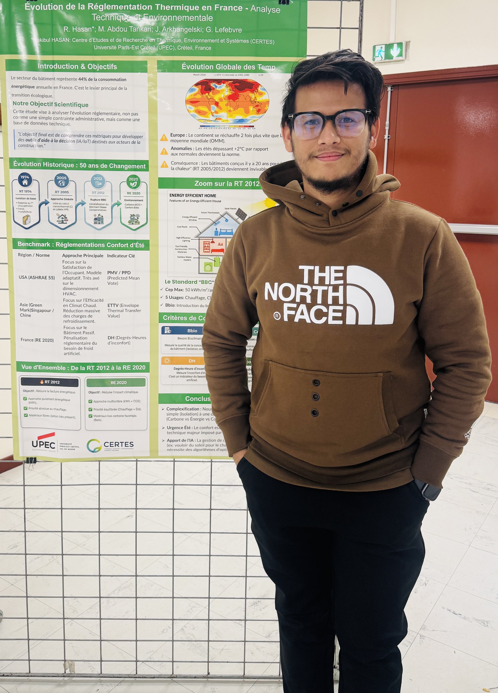
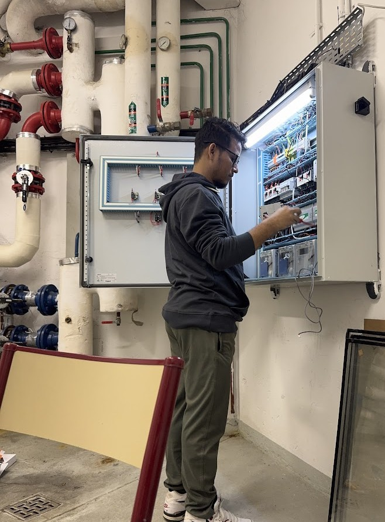

Rakibul Hasan
PhD Researcher | AI, IoT & Smart Energy Efficiency Systems in Building
Université Paris-Est Créteil (UPEC) — CERTES Laboratory
I am a doctoral researcher exploring AI-driven energy efficiency, IoT sensor networks, and intelligent building management systems. My work integrates hybrid deep learning models, LoRaWAN-based IoT data, and regulatory compliance frameworks to create proactive energy forecasting and anomaly detection solutions for large-scale buildings.
I am passionate about transforming raw sensor data into real-world impact, improving sustainability, and shaping the next generation of smart, energy-resilient infrastructures.

Research Interests
Smart Building Efficiency
Optimization of energy flows in tertiary buildings using intelligent BEMS.
Hybrid Deep Learning
Architectures combining LSTM, Transformers, and CNNs for complex data.
IoT Sensor Networks
LoRaWAN deployment and real-time environmental data acquisition.
Time-Series Forecasting
Predictive modeling of load profiles to anticipate energy needs.
Anomaly Detection
Identifying faults and consumption irregularities for preventative maintenance.
Peak Shaving Strategies
Algorithms to reduce energy demand spikes and optimize grid load.
AI for Sustainability
Data-driven solutions supporting the ecological transition and decarbonization.
Regulatory Compliance
Implementing data-driven solutions for frameworks like the Décret Tertiaire.
About The Researcher


I am a Doctoral Researcher at the CERTES Laboratory (EA 3481) within Université Paris-Est Créteil (UPEC). My research sits at the critical intersection of Artificial Intelligence, IoT, and Sustainable Energy. I specialize in designing proactive energy management systems that not only forecast consumption but also ensure compliance with environmental regulations like the Décret Tertiaire.
My academic journey spans continents and disciplines. With a strong foundation in Computer Science from Dhaka and a specialized Master’s in Intelligent Vision & Biometrics from UPEC, I bring a unique perspective to energy data. I moved from analyzing network traffic patterns to analyzing building load profiles, now developing hybrid deep learning models (LSTM + Spline Interpolation) to solve complex irregularity issues in time-series data.
Previously, I honed my skills as a Machine Learning Intern at Station F (Micco) and as an R&D Intern at UPEC, where I successfully improved energy forecasting accuracy for smart buildings.
Research & Professional Experience
Doctoral Researcher (Contrat Doctoral)
CERTES Laboratory, Université Paris-Est Créteil (UPEC)
- Designing proactive energy management systems using IoT sensors and AI.
- Developing hybrid deep learning models (LSTM + Interpolation) to handle irregular time-series data.
- Analyzing building load profiles to implement "Peak Shaving" strategies.
- Ensuring compliance with French environmental regulations (Décret Tertiaire) through data auditing.
R&D Research Intern (Master 2 Thesis)
CERTES Laboratory, UPEC
- Developed an innovative approach using Akima Spline Interpolation combined with LSTM networks.
- Processed real-time IoT sensor data to enhance anomaly detection and system monitoring.
- Implemented Artificial Intelligence models for failure prediction and reliability assessment.
- Achieved significant improvement in energy forecasting accuracy for smart buildings compared to traditional methods.
- Published findings in an IEEE International Conference.
Machine Learning Intern
Micco, STATION F
- Fine-tuned Large Language Models (LLMs) for NLP applications to improve accuracy.
- Developed predictive models for context-aware automation.
- Optimized data processing pipelines for scalable AI-driven applications.
Associate IT Security
Smart Technologies Ltd
- Developed AI-powered security tools for threat detection and prevention.
- Monitored network traffic patterns to identify anomalies using ML algorithms.
Academic Milestones
Doctor of Philosophy – PhD
2025 – Present
Université Paris-Est Créteil (UPEC) — CERTES
Research: AI & IoT for Smart Energy Efficiency. Developing proactive energy management systems.
Master of Science (MSc)
2023 – 2025
Université Paris-Est Créteil (UPEC)
Specialization: International Biometrics & Intelligent Vision. Focus on Image Processing & ML.
B.Sc. in Computer Science
2018 – 2022
Shanto-Mariam University
Specialization: AI and Data Processing. Thesis on Machine Learning.
Diploma in Engineering
2014 – 2018
Brahmanbaria Polytechnic Institute
Foundation in Engineering principles and technical systems.
Supervisory Team
Dr. Jura Arkhangelski
Associate ProfessorExpertise: Renewable energy integration, Microgrids, Transactive Control.
Dr. Mahamadou Abdou Tankari
Associate Professor (HDR)Expertise: Hybrid multi-source energy systems, Smart Grids control.
Prof. Gilles Lefebvre
Professor & Senior ResearcherExpertise: Thermal behavior modeling, Energetic optimization, Transition énergétique.
Technical Proficiency
Machine Learning & Deep Learning
Transformers, LSTM & GRU, CNNs, Autoencoders, XGBoost, Contrastive Learning, Sparse Representations, Model Explainability, Representation Learning
Programming & Frameworks
Python, MATLAB, C++, PyTorch, TensorFlow, HTML, CSS, JS
Data Science
Pandas, NumPy, Scikit-learn, Time-Series Forecasting, Data Visualization
IoT & Energy Systems
Smart Sensors, LoRaWAN, BEMS, Energy Optimization
Research & Tools
Git, Docker, LaTeX, SQL, VS Code
Publications & Outreach
"Comparative Evaluation of Deep Learning-Based AI Models for 24-Hour Energy Forecasting in Smart Buildings Using IoT Sensor Data"
2025 13th International Conference on Smart Grid (icSmartGrid), Glasgow, UK, May 2025.
"L’Intelligence Artificielle au Service de la Transition Énergétique dans le Secteur du Bâtiment"
Presented at: Fête de la Science 2025
"Title of Your Second Poster Presentation"
Presented at: Conference/Event Name
Languages
English
Full Professional Proficiency
French
Limited Working Proficiency
Bengali
Native or Bilingual Proficiency
Hindi
Professional Working Proficiency
Get In Touch
Rakibul Hasan
PhD Researcher
Institutional Affiliation
Université Paris-Est Créteil (UPEC)
Center for Studies and Research in Thermal, Environment and Systems (CERTES)
Direct Communication
Phone: +33 758004272
Academic Email: rakibul.hasan@u-pec.fr
Personal Email: rakibs8583@gmail.com
Personal Address: Paris, France
I am always open to academic collaboration and technical discussions regarding energy efficiency and AI.